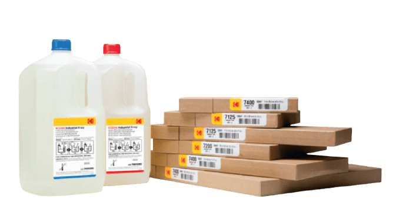
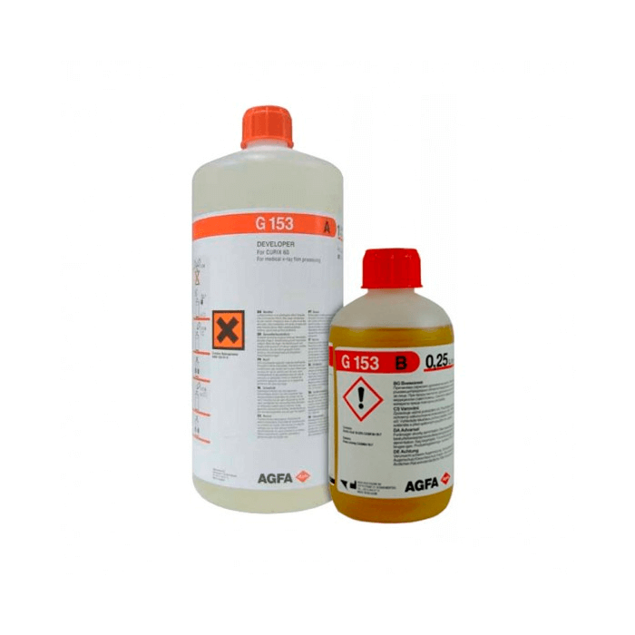
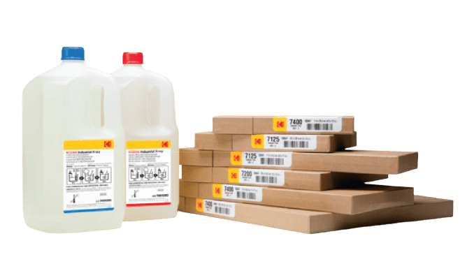
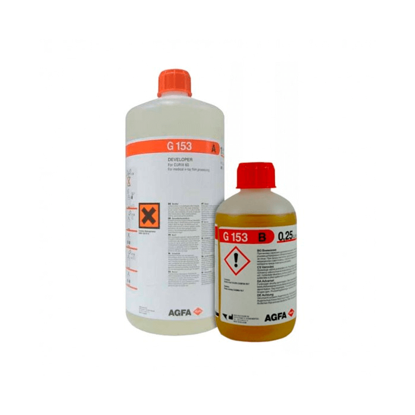
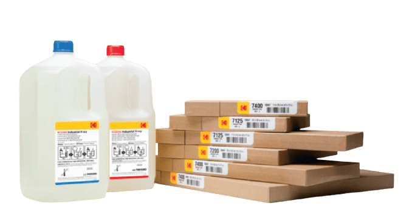
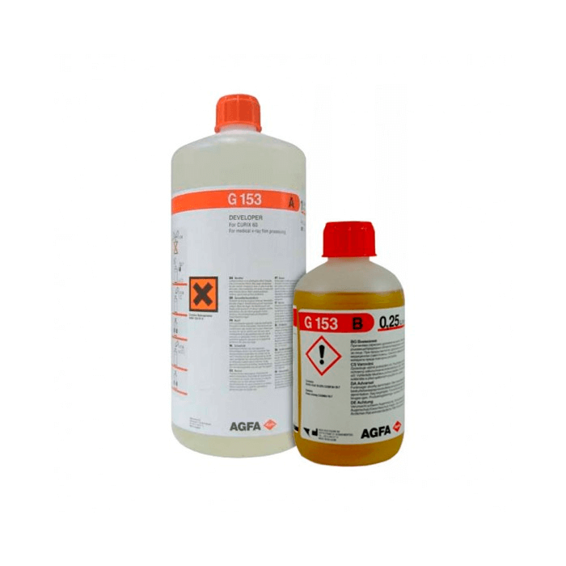

La Radiografía industrial es un Ensayo No Destructivo que
consiste en atravesar el componente a ensayar con un haz de
radiación electromagnética ionizante (rayos gamma o rayos X).
Esta radiación será más o menos absorbida por las
discontinuidades internas de la pieza, llegando a la otra cara
de la misma, con una intensidad de radiación distinta, e
impresionando una película radiográfica, la cual, una vez
revelada muestra la localización de dichas discontinuidades.
Dentro de las técnicas de Radiografía Industrial que se realizan
en NDT DIN, C.A. destacamos las siguientes:
Radiografía Convencional
NDT DIN, C.A. tiene los siguientes equipos para realizar
radiografía industrial:
Equipos portátiles de gammagrafía con fuentes de Ir192,
Se75.
Equipos fijos de gammagrafía para su utilización en búnker
con fuentes de Co60.
Equipos portátiles de Rayos X de hasta 360 kV para su
utilización en búnker y obra.
Equipos de Rayos X de potencial constante hasta 450 Kv para
su utilización en búnker.
Peliculas Radiográficas
Consumibles
Quimicos de Revelado


Tratamientos Térmicos
Se conoce como tratamiento térmico al conjunto de materiales de
aleaciones de metales y enfriamiento, bajo condiciones bruscas
de temperatura, tiempo de permanencia, velocidad, presión,
alineación de los metales o las aleaciones en estado sólido o
líquido, con el fin de mejorar sus propiedades mecánicas,
especialmente la dureza, la resistencia y la elasticidad. Los
materiales a los que se aplica el tratamiento térmico son,
básicamente, el acero, el vidrio y la fundición, formados por
hierro y carbono. También se aplican tratamientos térmicos
diversos a los cerámicos y maderas.
En NDT DIN, C.A. te ofrecemos el servicio de tratamiento termico
mediante equipos de primera calidad, utilizando maquinas para
tratamiento termico marca: COPPERGEAT Modelo: 65KVA.
 


